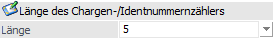
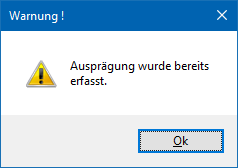
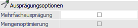
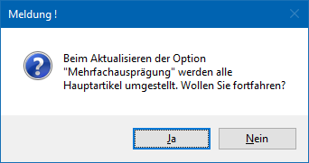

In dem Register "Einstellungen" können die Grundparameter für das Arbeiten mit Ausprägungen definiert werden.
Hinweis
Standardmäßig wird das Fenster für die Register "Einstellungen" und "Anlage" in einem "Lesemodus" geöffnet, d.h. es können die bestehenden Einstellungen kontrolliert, Änderungen allerdings nicht durchgeführt werden. Hierfür muss zunächst mit Hilfe des Buttons "Bearbeiten" der "Bearbeitungsmodus" aktiviert werden.

Ausprägung1 / Ausprägung2
Ø Ausprägung1 / Ausprägung2
Durch die Aktivierung der jeweiligen Option kann definiert werden, ob im Artikelstamm grundsätzlich mit individuellen Ausprägungen (z.B. Größen, Farben, Formen, etc.) gearbeitet werden soll. Hierbei wird automatisch eine sogenannte Ausprägungsgruppe, mit dem gleichen Namen wie die Ausprägungsbezeichnung, angelegt (nähere Informationen entnehmen Sie bitte dem Kapitel Ausprägungen verwalten).
Achtung
Bei der Deaktivierung der Option werden neben den einzelnen Ausprägungen alle entsprechend zugeordneten Ausprägungsgruppen gelöscht. Dieses ist nur möglich, wenn keine Artikel vorhanden sind, welche bereits diese Ausprägung verwenden.
Hinweis
Auch Identnummern- und Chargenartikel werden unter dem Namen "Ausprägungen" geführt, müssen aber an dieser Stelle nicht extra aktiviert werden (siehe auch Bereich "Länge des Chargen-/Identnummernzählers").
Ø Bezeichnung
An dieser Stelle kann die Ausprägung mit einer Hauptbezeichnung versehen werden.
Ø Kennzahllänge
Durch die Hinterlegung der Kennzahllänge (zwischen 2 und 4 Zeichen) wird die Länge des Kurzcodes der Ausprägungen definiert.
Beispiel
Die Kennzahllänge wird auf 3 Zeichen eingestellt und anschließend die Farbe (ist eine Ausprägung) "Orange" in dem Programm "Ausprägungen verwalten" angelegt. Die dort zu hinterlegende Kennzahl kann z.B. "O", "OR" oder "ORA" lauten, aber nicht "ORAN".
Achtung
Bei einer nachträglichen Reduzierung der Kennzahllänge, werden alle angelegten Ausprägungsinformationen gelöscht.
Trennzeichen
Ø Trennzeichen
Hier wird das Trennzeichen, welches automatisch zwischen der Artikelnummer und den Ausprägungen gesetzt wird, definiert. Dabei sollte ein Zeichen verwendet werden, welches in keiner Artikelnummer vorkommt (z.B. ";" oder ",").
Länge des Chargen-/Identnummernzählers

Ø Länge
An dieser Stelle kann die Länge des Zählers für Chargen und Identnummern vergeben werden, wobei 2 bis max. 10 Stellen zur Verfügung stehen. Diese Nummer betrifft aber nicht die Charge-/Identnummer als solches (diese beträgt max. 30 Stellen), sondern dient einer internen fortlaufenden Nummer, unter welcher die Chargen-/Identnummern geführt werden.
Hinweis
Eine nachträgliche Änderung der Länge des Zählers (Reduzierung oder Erweiterung) ist ohne Probleme möglich.
Achtung
Wenn die Länge des Chargen-/Identnummernzählers zu klein gewählt wurde (z.B. bei einer Länge von 1) erscheint folgende Meldung, sobald der Nummernkreis erschöpft ist (in diesem Fall bei der Anlage der 11. Charge bzw. Identnummer):

Ausprägungsartikel bei Änderung des Hauptartikels aktualisieren
Ø aktualisieren
Wenn die Option "aktualisieren" aktiviert ist und ein Hauptartikel geändert wird, werden ausgewählte Felder in den Ausprägungsartikeln ebenfalls abgeändert. Um welche Felder es sich hierbei handelt, kann über die Vorlage (siehe Feld "Vorlage") definiert werden.
Ø Vorlage
An dieser Stelle kann eine Artikelvorlage ausgewählt werden, wobei alle Vorlagen des Typ "Export/Import-Vorlage" zur Verfügung stehen. Mit Hilfe dieser Vorlage wird definiert, welche Felder, bei der Änderung eines Hauptartikels, in den Ausprägungsartikel ebenfalls aktualisiert werden sollen.
Hinweis
Folgende Felder werden beim Aktualisieren nicht berücksichtigt:
Artikelbezeichnung, Charge-/Identnummer, Ablaufdatum, Ersatzartikelnummer, Herstelldatum.
Ausprägungsoptionen

Ø Mehrfachausprägung
Bei Aktivierung der Checkbox "Mehrfachausprägung" wird im Artikelstamm die Option "Mehrfachausprägung" freigeschaltet.
Durch diese Option kann in der Folge bei Hauptartikeln mit Ausprägungen festgelegt werden, ob bei Lagerabgängen (d.h. Verwendung von Lagerbuchungsarten mit " L-", "V+" oder "P+") im Ausprägungsfenster die Menge auf mehrere oder nur auf eine Ausprägung aufgeteilt werden kann.
Hinweis
Bei Aktivierung der Checkbox werden automatisch alle Hauptartikel mit Ausprägung aktualisiert (Option "Mehrfachausprägung" im Artikelstamm wird aktiviert). Hierauf wird durch nachfolgende Meldung hingewiesen:

Ø Mengenoptimierung
Diese Option bewirkt für Hauptartikel mit Ausprägungen und Mehrfachausprägung (Option "Mehrfachausprägung" im Artikelstamm ist aktiviert) eine mengenoptimierte Ausprägungszuweisung bei Nutzung der Funktion "ohne Auswahl aufteilen" (z.B. in der Belegerfassung) bzw. "Hauptartikel ohne Auswahl aufteilen" (z.B. in "Kundenbestellungen bearbeiten").
Beispiel
Der Artikel "WB" (Wandfarbe blau) wird in Chargen geführt und vom Kunden "Annas Sportwelt" bestellt (175 Liter). Der aktuelle Lagerstand beträgt:
ü Charge 1 - 400 Liter
ü Charge 2 - 100 Liter
ü Charge 3 - 250 Liter
Bei deaktivierter Mengenoptimierung wird durch Anwahl des Buttons "ohne Auswahl aufteilen" / "Hauptartikel ohne Auswahl aufteilen" folgende Charge ausgewählt:
ü Charge 1 - 175 Liter (d.h. es wird die erste vom Bestand passende Ausprägung gewählt)
Bei aktivierter Mengenoptimierung wird durch Anwahl des Buttons ohne Auswahl aufteilen" / "Hauptartikel ohne Auswahl aufteilen" folgende Charge ausgewählt:
ü Charge 3 - 175 Liter (d.h. es wird die vom Bestand am besten passende Ausprägung gewählt)